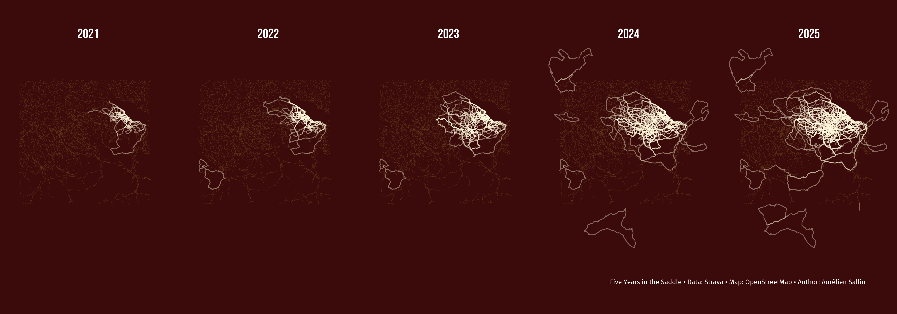

An artistic map of my biking meandering using rStrava and open street maps
Here’s to past watts, nice maps, and many new roads ahead
In 2025, I spent 322h biking around the countryside. Here is an artistic, data visualization way, to represent these hours of discovery and sweating effort.
Author
Aurélien Sallin
Published
December 31, 2025
Keywords
Strava, Data viz, Data science
Representing my biking in an artistic way
In 2025, I spent 322h biking around the countryside. In comparison to the time I spent working, teaching, or handling everyday family tasks, this is not a lot. But time spent biking (and also running) has a special quality to it. It is time outside, alone or with friends, an immediate and physical experience of speed, distance, and calm. This experience contrasts with my screen-based work, and has become a central element of balance and peace of mind in my life.
I ride to clear my head, to stay fit, to find new roads. And I record those rides on Strava. As a data visualization afficionado, I like to visualize my rides on maps. Seeing on maps how biking allowed me to discover new places and new roads over time gives me a deep feeling of freedom and excitement for future adventures.
In this blog, I created an artistic map that traces my bike rides and my runs since 2021. It shows with lines the meandering of my sport. The map displays the evolution over time and conveys this sense of unframed freedom and unlimited possibilities.

For each year, my biking activities are drawn on the map. I chose a facetted map with the cumulated activities over year to display the evolution. Letting activities grow outside the frame gives a sense of boundless exploration. The focus of the design is on activities, not on the map itself: for this reason, the roads and geographical elements are minimal to highlight the rides. If you know Eastern Switzerland, you’ll recognize Lake Constance, and Lake Zürich. For bikers here, you’ll notice the Gold Tour of the Alpenbrevet appearing in 2024.
How to: do Strava map art with R
This map is a nice excuse to play with the Strava API, Open Street Maps, R, ggplot, and my favorite color tones. Here is a step-by-step explanation on how I coded the map. The full commented code is also available directly in this blog.
Step 1: Set up R
First, install and load the necessary libraries. I use the rStrava package to connect to the Strava API and download my activities, and osmdata + ggplot2 to visualize them on OpenStreetMap. Fonts are added using showtext.
Show R code for package loading
# Strava API wrapperlibrary(rStrava)# OpenStreetMap and sf for polygonslibrary(osmdata)library(sf)library(googleway) # Convert polygons from Rstrava to sf# Standard tidyverselibrary(readr)library(ggplot2)library(dplyr)# Add fonts for my graphslibrary(showtext)font_add_google("Fira Sans", "Fira Sans") font_add_google("Bebas Neue", "Bebas Neue")showtext_auto()
Step 2: Get the data from Strava using the rStrava API wrapper
I followed the rStrava vignette to authenticate with the API and access my activities. I extract my activities, keep only rides and runs, and save them as CSVs to avoid re-downloading every time. The activity data includes a compressed polyline (Google format) with GPS coordinates. I decode them into usable line geometries to visualize the actual paths of each activity.
In a second step, I use decode_pl() to extract the GPS coordinates from each activity’s polyline. Then I convert them to LINESTRING geometries — after all, rides are linear paths, and Strava doesn’t know random walks 😬🥁.
Show R code for interaction with the Strava API
# Check if I already downloaded and saved my activities. If not, connect # to the API and extract data. strava_file <- here::here("posts/blog2_strava/cache/strava_run.csv")if (!file.exists(strava_file)) { app_name <-Sys.getenv("STRAVA_APP_NAME") app_client_id <-Sys.getenv("STRAVA_CLIENT_ID") app_secret <-Sys.getenv("STRAVA_CLIENT_SECRET")stopifnot(nzchar(app_client_id), nzchar(app_secret))# create the authentication token stoken <- httr::config(token =strava_oauth( app_name, app_client_id, app_secret, app_scope="activity:read_all") )# get activities by date range my_acts <-get_activity_list(stoken, after =as.Date('2021-01-01')) act_data <-compile_activities(my_acts, units ="metric") # Prepare data my_acts <- act_data |>select( id, start_date, type, name, lat = start_latlng1, lng = start_latlng2, map.summary_polyline ) |>filter(type %in%c("Run", "Ride")) count(my_acts, type)# Save data per activityfilter(my_acts, type =="Run") |>write_csv(here::here("posts/blog2_strava/cache/strava_run.csv"))filter(my_acts, type =="Ride") |>write_csv(here::here("posts/blog2_strava/cache/strava_ride.csv"))} else { my_acts <-bind_rows(read_csv(here::here("posts/blog2_strava/cache/strava_run.csv")),read_csv(here::here("posts/blog2_strava/cache/strava_ride.csv")) )}
Show R code for activity preparation
# Import polygons using a custom functionmake_lines_sf <-function(df) {# Initialize new vector for results res <-vector("list", nrow(df))# Control flowfor (j inseq_len(nrow(df))) { coords <-tryCatch( googleway::decode_pl(df$map.summary_polyline[j]),error =function(e) NULL )if (is.null(coords)) next coords <- coords |>filter(!is.na(lat), !is.na(lon))if (nrow(coords) <2) next# Transform to lines ls <-st_linestring(as.matrix(coords[, c("lon", "lat")]))# Store res[[j]] <-st_sf(id = df$id[j],type =as.character(df$type[j]),geometry =st_sfc(ls, crs =4326) ) } out <-do.call(rbind, res[!vapply(res, is.null, logical(1))]) out}my_acts <- my_acts |>mutate(year = lubridate::year(start_date))acts_lines <-make_lines_sf(my_acts) |>mutate(year = my_acts$year)
Step 3: Create a map with all running and biking activities in 2025
My first map will be used as a post on Strava to wish my community a happy 2026.
As the basic structure of the map, I define a bounding box for Eastern Switzerland (from Zürich to Bregenz, Konstanz to Luzern). That’s where most of my activities take place. I went biking and running in Western Switzerland and Spain, which I will not show on the map. I extract the main roads from OpenStreetMap using add_osm_feature()and cache them to a .gpkg file to avoid re-downloading.
Once the activities and the map have been prepared, use ggplot() and geom_sf to plot the map rectangle, the street lines, and the activities. I chose among two favorite color palettes to display the map in a nice artistic way. I also chose a font that I thought would go well with the overall design.
Show R code for the map and street preparation
# We create a rectangle around Eastern Switzerlandbb_rect <-st_as_sfc(st_bbox(c(xmin =8, xmax =9.7,ymin =46.75, ymax =47.85), crs =4326))# We extract the street polygons from OpenStreetMaproads_file <- here::here("posts/blog2_strava/cache/roads.gpkg")if (!file.exists(roads_file)) { streets <-opq(st_bbox(bb_rect)) |>add_osm_feature(key ="highway",value =c("motorway", "primary", "secondary", "tertiary") ) |>osmdata_sf() streets_lines <- streets$osm_linesdir.create(dirname(roads_file), showWarnings =FALSE, recursive =TRUE) sf::st_write( streets_lines, roads_file,layer ="roads",delete_layer =TRUE,quiet =TRUE )} else { streets_lines <- sf::st_read( roads_file,layer ="roads",quiet =TRUE )}# I don't restrict the rectangle as much for the activity maps. I like the effect it has when the activities extend to the margins.rect <-st_as_sfc(st_bbox(c(xmin =7.9, xmax =9.8,ymin =46.7, ymax =47.9), crs =4326))acts_lines <- acts_lines[st_intersects(acts_lines, rect, sparse =FALSE), ]acts_lines_bike <-filter(acts_lines, type =="Ride")acts_lines_runbike_2025 <-filter(acts_lines, year ==2025)
Show R code for color palette definition
# Choose between two color palettesget_palette_colors <-function(palette =c("purple", "cherry")) { palette <-match.arg(palette)if (palette =="purple") {list(background ="#573b88",roads ="#9b73a9",rides ="#ffffff" ) } else {list(background ="#3B0A0A",roads ="#663c1bff",rides ="#FFF8DC" ) }}
Show R code for the map
# Define colorscolors1 <-get_palette_colors("cherry")color_background <- colors1$backgroundcolor_roads <- colors1$roadscolor_rides <- colors1$rides# Create the base mapbase_map_bike <-ggplot() +geom_sf(data = bb_rect, fill = color_background, color =NA) +geom_sf(data = streets_lines, color = color_roads, linewidth =0.1) +coord_sf(expand =FALSE) +labs(title =paste0("<span style='font-family:Fira Sans;font-size:20pt;'>After drawing so many new lines on the 2025 map,</span><br>","<span style='font-size:48pt;'>Happy 2026!</span>" ),subtitle ="Full of km, watts, unseen places, and joyful discoveries!",caption ="Data: Strava • Map: OpenStreetMap • Author: Aurélien Sallin" ) +theme_void() +theme(text =element_text(family ="Bebas Neue", color = color_rides),plot.background =element_rect(fill = color_background, color =NA),plot.margin =margin(t =1, r =10, b =1, l =10, unit ="pt"),legend.position ="none",plot.title = ggtext::element_markdown(family ="Bebas Neue", size =36, color ="white", hjust =0.5,lineheight =0.7 ),plot.subtitle = ggtext::element_markdown(family ="Fira Sans", size =20, color ="white", hjust =0.5,margin =margin(t =10) ),plot.caption =element_text(family ="Fira Sans", size =16, color ="white", hjust =0.95 ) )# Add the activity geometriesmap_2025 <- base_map_bike +geom_sf(data = acts_lines_runbike_2025, color = color_rides, linewidth =0.5, alpha =0.5)
Mapping the journey: year by year
Step 4: The final map: evolution of my rides over time
I restrict the activities to biking only, and create a dataset containing the cumulated activities over the years. I use facetting to show how the map evolved year by year.
Show R code for the activity preparation
# Filter on bike activities and extract the year of the activitymy_acts <- my_acts |>filter(type =="Ride") |>mutate(year = lubridate::year(start_date))years <-sort(unique(my_acts$year))# Cumulate activitiescumulative_sf_list <-list()# For each year, include all rides up to that year (cumulative map)for (y in years) {# Filter all rides up to and including year y df_cum <- my_acts |>filter(year <= y)# Convert to sf LINESTRINGs using the function I created above sf_lines <-make_lines_sf(df_cum) sf_lines$year_facet <-as.character(y) # For facetting in the graph cumulative_sf_list[[as.character(y)]] <- sf_lines}# Combine into single sf objectcumulative_rides <-do.call(rbind, cumulative_sf_list)cumulative_rides <- cumulative_rides[st_intersects(cumulative_rides, rect, sparse =FALSE), ]
Show R code for the map
map_peryear <-ggplot() +geom_sf(data = bb_rect, fill = color_background, color =NA) +geom_sf(data = streets_lines, color = color_roads, linewidth =0.1) +coord_sf(expand =FALSE) +geom_sf(data = cumulative_rides, color = color_rides, linewidth =0.6, alpha =0.4) +facet_grid(~ year_facet) +labs(caption ="\nFive Years in the Saddle • Data: Strava • Map: OpenStreetMap • Author: Aurélien Sallin" ) +theme_void() +theme(panel.background =element_rect(fill = color_background),plot.background =element_rect(fill = color_background),legend.position ="none",panel.spacing =unit(0.5, "lines"),plot.title =element_text(family ="Bebas Neue", size =60, color ="white", hjust =0.5 ),plot.subtitle =element_text(family ="Fira Sans", size =12, color ="white", hjust =0.5 ),plot.caption =element_text(family ="Fira Sans", size =28, color ="white", hjust =0.95 ),strip.text =element_text(family ="Bebas Neue", size =56, face ="bold", color ="white" ) )
If it’s not on Strava, it didn’t happen - also in 2026
First of all, as the saying goes, if it’s not on Strava, it didn’t happen. Now you have living proof that the metaphysical importance of Strava entries has real-life consequences.
Second, making beautiful maps from Strava activities brings exactly the sense of satisfaction and achievement we seek around the new year. With the cold outside, spending extra time coding was quite rewarding. Take care and happy 2026!